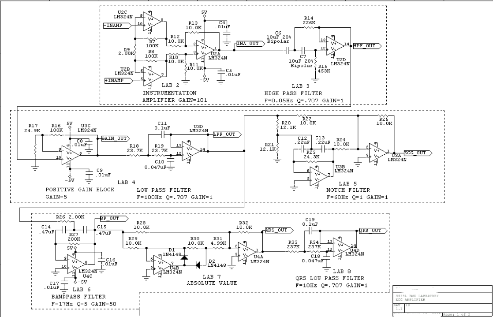

2022-11-25 ECG Course Project
In BME335 I was introduced to biomedical intstrumentation and sensors that are used in the real world. One device of prominence is the ECG (ElectroCardioGram) or EKG (ElectroKardioGram) depending on where you are from. Through 4 different lab sessions and multiple hours spent outside of the scheduled lab time I was able to not only design but test the ECG system on myself. Included below is the schematic, the breadboard used, and a PCB that was desgined in lab:
